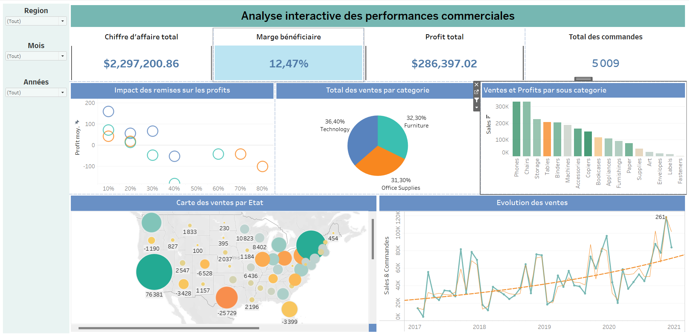
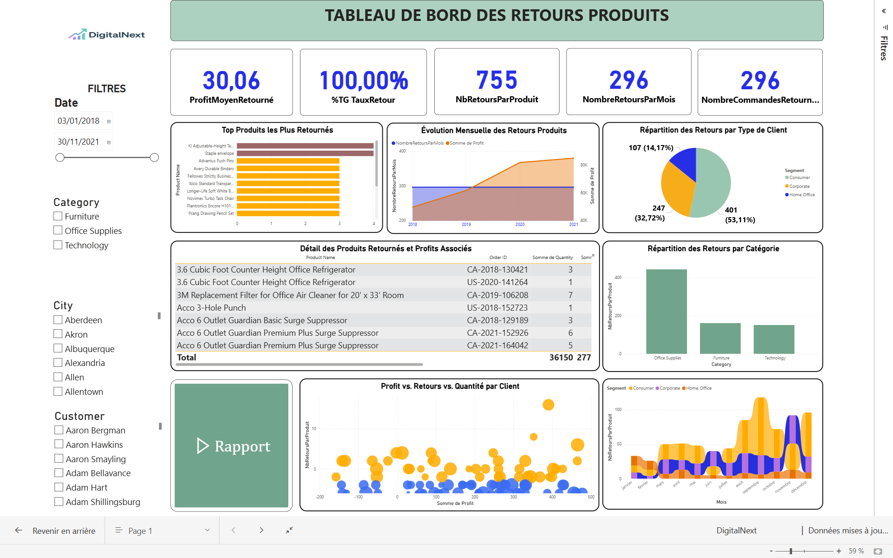
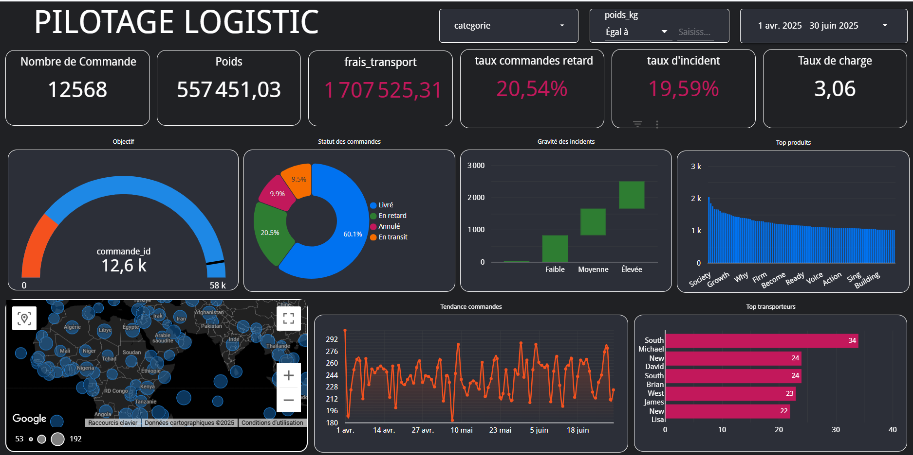

Vision+ - Dashboard Analyse Vente & Retours Produits

🎯 Objectif :
Offrir une vue consolidée et interactive de la performance commerciale, des comportements d'achat et des retours produits. Ce tableau de bord permet aux équipes marketing et direction de piloter les ventes, de détecter les produits à problème et d'anticiper les pics de retours.
🚀 Particularité :
Design moderne avec visualisation par saison, genre et catégorie, permettant d'identifier les comportements d'achat selon le profil client. Une fonctionnalité d'alerte visuelle met automatiquement en évidence les produits les plus problématiques, réduisant le temps d'analyse et de prise de décision de plus de 50 %.
📊 Indicateurs & Analyses :
- Évolution des ventes par mois et par segment client
- Produits les plus vendus vs les plus retournés
- Analyse par sexe (homme/femme) et par saisonnalité
- Taux de retour global et par sous-catégorie
- Profitabilité moyenne et identification des pertes liées aux retours
- Comportements des clients fidèles et identification des profils à risque
🛠️ Outils & Compétences :
Power BI (visualisations interactives), DAX (indicateurs personnalisés), Power Query (nettoyage & structuration des données), Design UX (fond sombre, couleurs dynamiques, lisibilité), Optimisation des filtres pour un pilotage agile.
Tableau Desktop - Analyse Commerciale

🎯 Objectif :
Permettre une lecture simple et efficace des performances commerciales par produit, par saison et par profil client, en un coup d'œil. Ce tableau de bord offre une analyse rapide pour mieux piloter les ventes et maximiser la rentabilité.
🚀 Particularité :
Première utilisation concrète de Tableau Desktop dans un contexte professionnel, avec une prise en main rapide de l'outil. Construction d'un dashboard complet malgré les contraintes techniques initiales, avec indicateurs personnalisés, gestion des filtres et visualisations claires.
📊 Indicateurs & Analyses :
- Chiffre d'affaires global et par catégorie
- Analyse par région et par période
- Visualisation des marges et profits moyens
- Impact des retours produits sur les bénéfices
- Segmentation des performances selon le genre et la saisonnalité
🛠️ Outils & Compétences :
Tableau Desktop (dashboards interactifs), Création de KPIs, Visualisations dynamiques, Filtres multi-critères, Storytelling visuel, Prise en main accélérée de l'outil.
DigitalNext - Dashboard Retour Produits

🎯 Objectif :
Analyse stratégique des retours produits afin de réduire les pertes financières et améliorer l'expérience client. Ce tableau de bord permet de suivre en temps réel les produits les plus retournés, de comprendre les causes, et de piloter des actions correctives.
🚀 Particularité :
Intégration d'une page dédiée à l'export PDF automatisé via Power Automate. Cette automatisation permet aux équipes de recevoir un rapport synthétique clé en main, directement par e-mail, réduisant ainsi de plus de 70 % le temps consacré aux reporting manuels.
📊 Indicateurs & Analyses :
- Volume des retours par mois, catégorie et type de client
- Segmentation par zone géographique
- Produits les plus problématiques identifiés
- Pertes financières associées aux retours
- Analyse croisée : profit / quantité / retours, pour mieux cibler les leviers d'action
🛠️ Outils & Compétences :
Power BI (visualisation, storytelling), DAX (calculs avancés), Power Query (préparation des données), Power Automate (automatisation des exports), Design UI (tableau épuré et orienté décision).
VisionPlus - Dashboard Performance Commerciale

🎯 Objectif :
Fournir une vision claire et opérationnelle des ventes et retours produits pour aider à piloter l'activité d'une enseigne spécialisée dans les lunettes et accessoires. L'objectif : réduire les pertes liées aux retours, identifier les leviers de rentabilité, et guider les décisions commerciales.
🚀 Particularité :
Ce dashboard a été conçu dans un environnement réaliste avec des données imparfaites, simulant les conditions d'un projet en entreprise. Il intègre une analyse croisée des ventes, retours et profits permettant d'identifier rapidement les produits à risque, les pics de retours par saison, et les zones géographiques sous-performantes.
📊 Indicateurs & Insights :
- Taux de retour global et par catégorie de produit
- Produits les plus rentables vs les plus retournés
- Analyse par genre (hommes / femmes) et par saison
- Comparatif ventes vs retours, profits par mois
- Alerte visuelle sur les produits à surveiller
🛠 Outils & Méthodes :
Looker Studio (dashboard cloud), SQL (modélisation des données), Analyse exploratoire, Data Cleaning, Visualisation interactive avec filtres et storytelling accessible à tous.